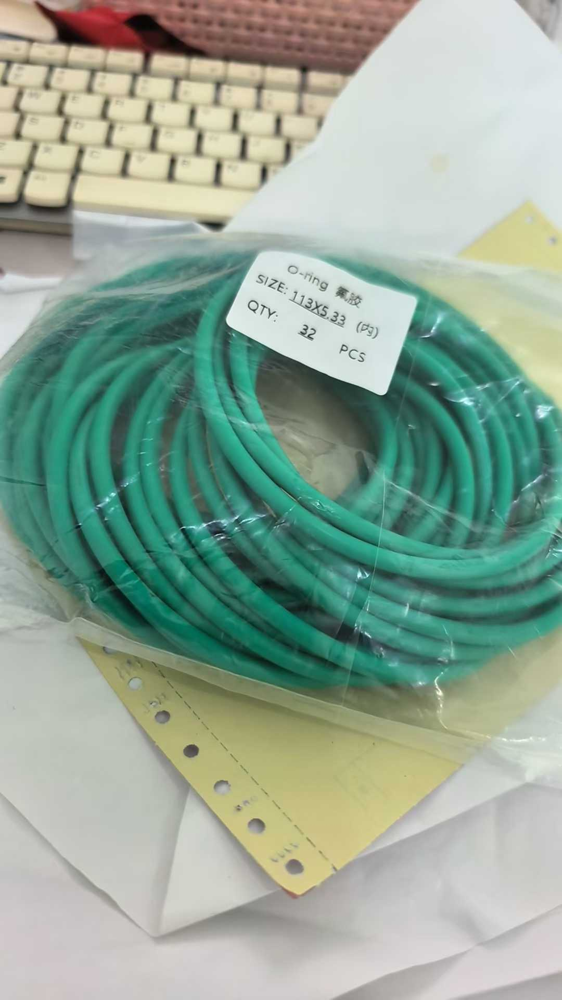
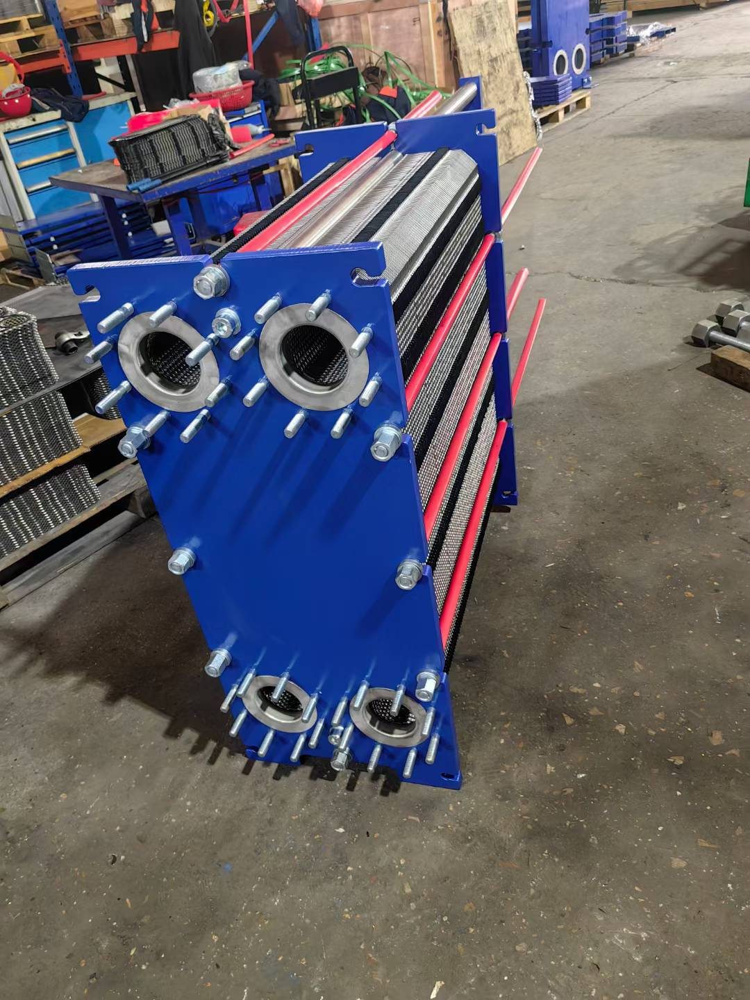
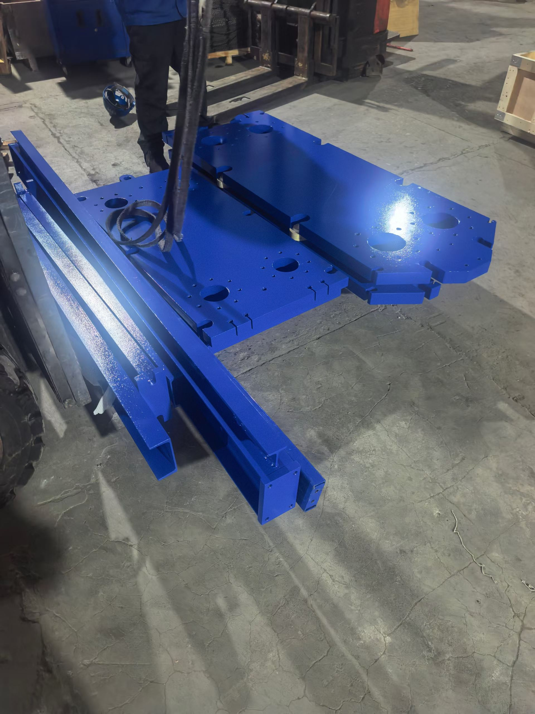

Alfa Laval M10B vs M10M, M15B vs M15M: Differences and Application Scenarios
Meaning of B and M Suffixes
The suffix letter in Alfa Laval plate heat exchanger model numbers represents the plate bonding method, which is the key to understanding the entire product line:
| Suffix | Full Name | Meaning | Structure |
|---|---|---|---|
| B | Brazed | Copper-brazed | Plates permanently joined by copper brazing, non-removable |
| M | Machine/Gasketed | Gasketed | Plates sealed by rubber gaskets, removable for maintenance |
In simple terms:
- M10B = M10 series + copper brazed = integral non-removable unit
- M10M = M10 series + gasket sealed = removable type
- Same applies to M15B and M15M
The same M10 plate model generates two completely different products due to different bonding methods.

Core Differences: Brazed (B) vs Gasketed (M)
1. Structural Differences
Brazed Type (B)
- Copper foil placed between stainless steel plates, brazed in vacuum furnace at high temperature
- Molten copper permanently welds all plates into one unit
- No gaskets, no bolts, no movable frame plate
- Fully sealed, extremely compact structure
Gasketed Type (M)
- Rubber sealing gaskets placed between plates
- Clamping bolts compress plates and gaskets between fixed and movable frame plates
- Can be disassembled by loosening bolts for cleaning or gasket replacement
- Gaskets are consumables requiring periodic replacement
2. Performance Comparison
| Parameter | M10B (Brazed) | M10M (Gasketed) | M15B (Brazed) | M15M (Gasketed) |
|---|---|---|---|---|
| Max working pressure | 30 bar | 20 bar | 30 bar | 20 bar |
| Max working temperature | -195 to 225C | -20 to 180C (gasket-dependent) | -195 to 225C | -20 to 180C |
| Plate material | 316 SS | 316 SS | 316 SS | 316 SS |
| Brazing material | Pure copper | None (gasket seal) | Pure copper | None |
| Gasket material | No gaskets | NBR/EPDM/FKM | No gaskets | NBR/EPDM/FKM |
| Removable | Non-removable | Removable | Non-removable | Removable |
| Size | Compact | Larger | Compact | Larger |
| Weight | Lighter | Heavier | Lighter | Heavier |
3. Maintenance Differences
| Maintenance Item | B Type (Brazed) | M Type (Gasketed) |
|---|---|---|
| Routine cleaning | Chemical cleaning only (acid/alkali wash) | Disassemble for physical brushing + chemical wash |
| Gasket replacement | No gaskets, not applicable | Replace every 2-3 years or per service cycle |
| Plate replacement | Cannot replace individually; full unit replacement | Can replace individual damaged plates |
| Leak repair | Cannot repair; full unit replacement | Replace gaskets or adjust clamping dimension |
| Blockage clearing | Chemical cleaning to dissolve | Disassemble and clean, can clear physically |
| Service life | 15-20 years (no gasket aging) | 20+ years for plates; gaskets replaced periodically |
M10B vs M10M Detailed Comparison
Basic Parameters
M10 is one of Alfa Laval's most classic small-to-medium plate heat exchanger models, with effective heat transfer area of approximately 0.05-0.08 m2 per plate.
| Parameter | M10B | M10M |
|---|---|---|
| Plate length | ~320mm | ~320mm |
| Plate width | ~120mm | ~120mm |
| Heat transfer area per plate | ~0.07 m2 | ~0.07 m2 |
| Max number of plates | ~70 | ~100 |
| Max total heat transfer area | ~4.8 m2 | ~7.0 m2 |
| Connection size | DN25/1" | DN25/1" |
| Max flow rate | ~5 m3/h | ~7 m3/h |
M10B Application Scenarios
Brazed M10B is suitable for clean media, infrequent cleaning applications:
- HVAC systems — Heating water and return water heat exchange, clean media
- Instantaneous domestic hot water heating — Tap water heating, relatively clean
- Hydraulic oil cooling — Closed hydraulic system oil cooling
- Compressor oil cooling — Air compressor lubricant cooling
- Refrigeration evaporator/condenser — Freon-water heat exchange
- Heat pump systems — Ground-source/air-source heat pump intermediate exchange
- Solar hot water systems — Collector loop water to domestic water exchange
M10M Application Scenarios
Gasketed M10M is suitable for media that may contain impurities, requires periodic maintenance:
- Marine seawater cooling — Seawater prone to scaling, requires periodic disassembly cleaning
- Industrial circulating water cooling — Circulating water may contain suspended solids
- Food and beverage industry — Requires periodic disassembly, cleaning, and sterilization
- Chemical media cooling — May need gasket replacement for different media
- Engine jacket water cooling — Marine main engine fresh water cooling

M15B vs M15M Detailed Comparison
Basic Parameters
M15 is one size larger than M10, with effective heat transfer area of approximately 0.13-0.16 m2 per plate, suitable for larger flow rates.
| Parameter | M15B | M15M |
|---|---|---|
| Plate length | ~500mm | ~500mm |
| Plate width | ~180mm | ~180mm |
| Heat transfer area per plate | ~0.15 m2 | ~0.15 m2 |
| Max number of plates | ~100 | ~150 |
| Max total heat transfer area | ~15 m2 | ~22.5 m2 |
| Connection size | DN40/1.5" | DN40/1.5" |
| Max flow rate | ~15 m3/h | ~20 m3/h |
M15B Application Scenarios
- District heating systems — Primary to secondary network heat exchange
- Large hydraulic system oil cooling — Construction machinery, injection molding hydraulic oil
- Refrigeration unit subcoolers — Refrigerant liquid-water exchange
- Heat pump units — Medium-capacity ground-source heat pump systems
- Swimming pool heating — Pool water to heat medium exchange
- Industrial process cooling — Clean media cooling
M15M Application Scenarios
- Marine central coolers — Seawater to fresh water exchange, periodic disassembly cleaning
- Large marine main engine cooling — Fresh water cooler
- Chemical process cooling — May need gasket changes for different media
- Food processing heating/cooling — Requires CIP or disassembly cleaning
- Generator set cooling — Diesel generator jacket water cooling
- Metallurgical industry cooling — Industrial water that may contain impurities

Selection Decision Guide
When to Choose B Type (Brazed)
Prefer M10B or M15B when:
- Clean media without suspended particles or impurities
- No need for frequent disassembly cleaning
- Higher working pressure (>20 bar)
- Extreme temperatures (cryogenic <-20C or high temp >180C)
- Limited space, compact equipment needed
- Lower initial investment budget (brazed is cheaper than equivalent gasketed)
- No corrosive media that would attack copper brazing joints
When to Choose M Type (Gasketed)
Prefer M10M or M15M when:
- Media may contain impurities, prone to scaling
- Requires periodic disassembly for cleaning or gasket replacement
- Corrosive media requiring special gasket materials
- Media may change, requiring gasket material changes
- Marine industry (seawater cooling almost always uses M type)
- Food and beverage industry (hygiene requirements, needs disassembly sterilization)
- Long-term cost sensitivity (repairable rather than full unit replacement)
Special Case: Titanium Plates
For seawater or highly corrosive media, M10 and M15 both have titanium plate versions:
- M10M-Titanium — Titanium gasketed removable type
- M15M-Titanium — Titanium gasketed removable type
Brazed types are generally not recommended for seawater (copper brazing joints corrode in seawater), so titanium versions are primarily available in M type.
Common Selection Mistakes
Mistake 1: Choose Brazed Because It's Cheaper
B type does have lower initial cost than M type. However, if media contains impurities causing blockage, brazed units cannot be physically disassembled for cleaning — only chemical cleaning or full unit scrapping. Long-term cost may be higher.
Mistake 2: Use Brazed for Marine
Marine seawater cooling must use M type (gasketed) — never B type. Seawater corrodes copper brazing joints, and marine biological growth and salt crystallization require periodic disassembly cleaning.
Mistake 3: Use Brazed for Food Industry
Food and beverage industry requires CIP cleaning or periodic disassembly — M type meets hygiene requirements. B type cannot be disassembled and does not meet food-grade equipment standards.
Mistake 4: Choose Brazed for High Pressure
B type rated pressure of 30 bar is indeed higher than M type's 20 bar. But if actual working pressure is below 10 bar, M type is more than sufficient and easier to maintain.
Parts Availability
Whether you use M10B, M10M, M15B, or M15M, Taizhou Richuan Fluid Control Technology Co., Ltd. supplies corresponding parts:
| Part Type | M10B | M10M | M15B | M15M |
|---|---|---|---|---|
| Plates | 316 SS plates | 316 SS plates | 316 SS plates | 316 SS plates |
| Titanium plates | — | Available | — | Available |
| Gaskets (NBR) | Not applicable | Available | Not applicable | Available |
| Gaskets (EPDM) | Not applicable | Available | Not applicable | Available |
| Gaskets (FKM) | Not applicable | Available | Not applicable | Available |
| Clamping bolts | Not applicable | Available | Not applicable | Available |
| Full unit replacement | Available | Available | Available | Available |
Conclusion
Although M10B/M10M and M15B/M15M share the same plate models, the brazed and gasketed bonding methods create completely different product positioning:
| Comparison | B Type (Brazed) | M Type (Gasketed) |
|---|---|---|
| Best scenario | Clean media, compact space | Impure media, needs maintenance |
| Representative industries | HVAC, refrigeration, heat pumps | Marine, food, chemical |
| Maintenance method | Chemical cleaning, full replacement | Disassemble cleaning, gasket replacement |
| Service life | 15-20 years, no gasket aging | 20+ years, periodic gasket replacement |
| Pressure rating | 30 bar | 20 bar |
| Temperature range | -195 to 225C | -20 to 180C |
One-line selection principle: Clean media, choose B for simplicity; dirty media, choose M for maintainability.
For M10B, M10M, M15B, or M15M plate, gasket, or unit quotes, please contact Taizhou Richuan Fluid Control Technology Co., Ltd. for professional parts supply and technical support.